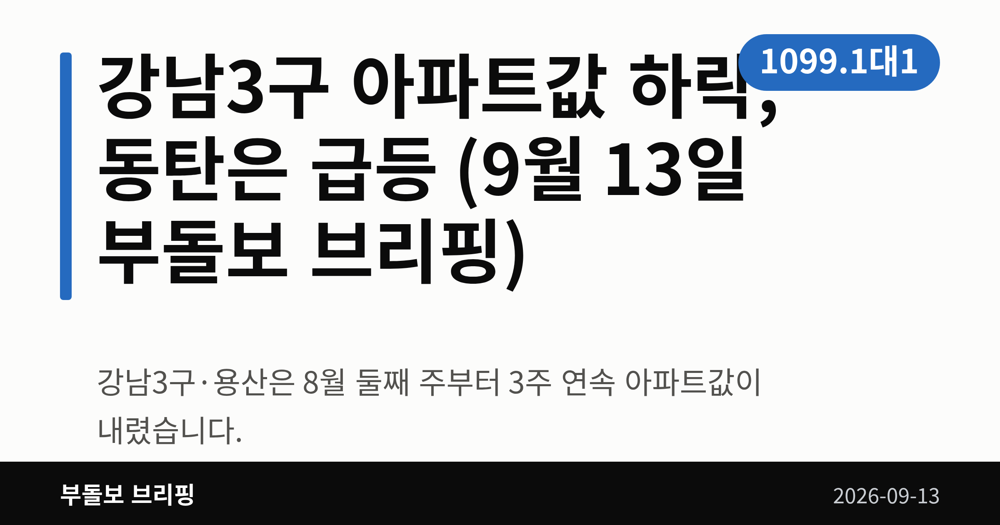
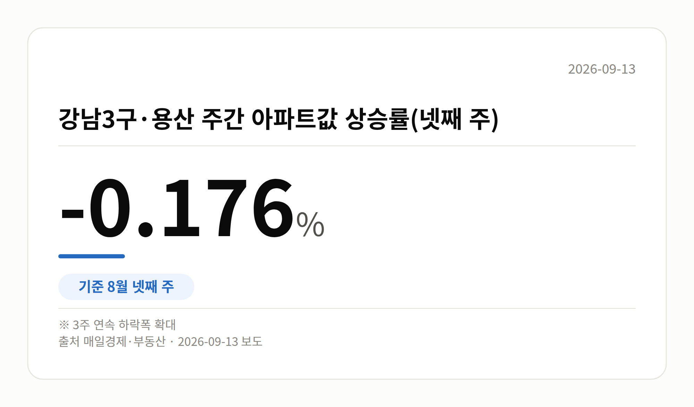
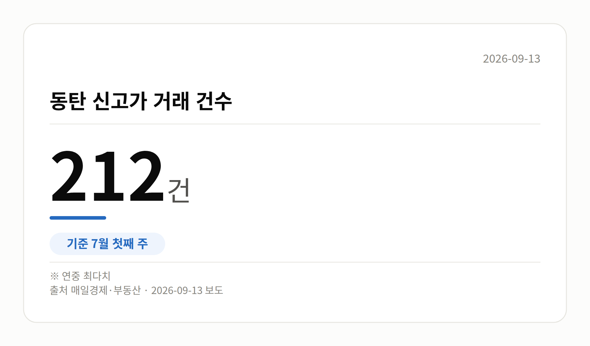
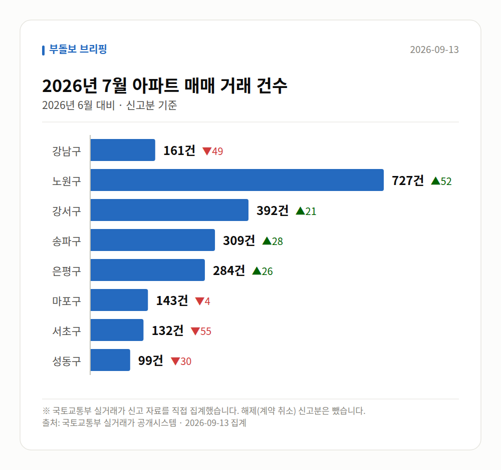

이 글은 2026년 9월 13일 기준으로 정리한 내용입니다. 실거래 수치는 2026년 7월 신고분입니다.
강남3구 아파트값 하락이 3주 연속 이어졌습니다. 반대로 화성 동탄은 주간 상승률이 연중 최고치를 찍었습니다. 같은 수도권인데 방향이 정반대입니다.
오늘은 이 온도차 하나만 자세히 보겠습니다.
강남3구(강남·서초·송파)와 용산의 주간 아파트값 상승률은 8월 둘째 주에 마이너스로 돌아섰습니다. 이후 3주 연속으로 하락폭이 커졌습니다.
| 구분 | 8월 2주 | 8월 3주 | 8월 4주 |
|---|---|---|---|
| 강남3구·용산 | -0.001% | -0.013% | -0.176% |
같은 8월 넷째 주에 서울 외곽은 0.485%, 경기 규제지역은 0.51% 올랐습니다. 강남3구 아파트값 하락과는 확연히 다른 흐름입니다.

화성 동탄은 6월 둘째 주 주간 상승률 2.22%로 연중 최고치를 기록했습니다. 7월 첫째 주에는 신고가 거래가 212건으로 연중 가장 많았습니다.
배경으로는 반도체 기업의 성과급 지급과 사내대출 확대 기대가 함께 언급됐습니다. GTX-A 동탄역 인근 '동탄역 롯데캐슬' 전용 84㎡는 6월에 22억2500만원으로 신고가를 새로 썼습니다.
특정 산업의 자금이 들어오는 지역은 규제 강도와 별개로 수요가 몰릴 수 있다는 점을 보여주는 사례입니다.

한국은행이 9월 10일 내놓은 통화신용정책보고서를 보면, 수도권 주택매매가격 상승률은 6월 0.68%에서 7월 0.72%로 오름폭이 조금 커졌습니다. 예금취급기관 가계대출은 6월 한 달간 7조4000억원 늘었습니다.
박종우 부총재보는 정부의 거시건전성 관리 의지가 바뀐 것은 아니며, 실수요자 문제에 대한 미시적 조정이라고 설명했습니다.
한국은행은 9월 3일 발표된 부동산 세제개편안이 초고가 주택 거래를 위축시킬 수 있다고 봤지만, 국회 입법 과정에 따라 달라질 수 있다고 덧붙였습니다. 아직 확정된 내용은 아니라는 뜻입니다.
어려운 말 하나만 풀고 마칩니다. DSR은 내 연소득에서 모든 대출 원리금이 차지하는 비율로, 대출 한도를 정하는 기준입니다.
서울 8개 구에서 신고된 매매는 2247건입니다. 2026년 6월 2258건과 견주면 -11건입니다.
거래가 많은 곳: 강남구 161건(-49) · 노원구 727건(+52) · 강서구 392건(+21)
강남구 전세가율(전세 보증금 ÷ 매매가)은 가운뎃값 38.8%입니다. 같은 단지·같은 면적 44곳을 견줬습니다.
서울 25개 구 가운데 거래가 가장 크게 움직인 곳: 중랑구 +137.4%(211→501건, 묵동에 66.3% 몰림) · 동작구 +55.6%(153→238건)
2026년 8월 계약 신고가

→ 그림 파일 img-stats-volume.png 을 이 자리에 올리세요
국토교통부 실거래가 신고 자료를 직접 집계했습니다. 해제(계약 취소) 신고분은 뺐습니다.
여러분이 보고 계신 동네는 지금 어느 쪽 흐름에 더 가까운가요?
댓글로 알려 주시면 다음 글에 반영하겠습니다.